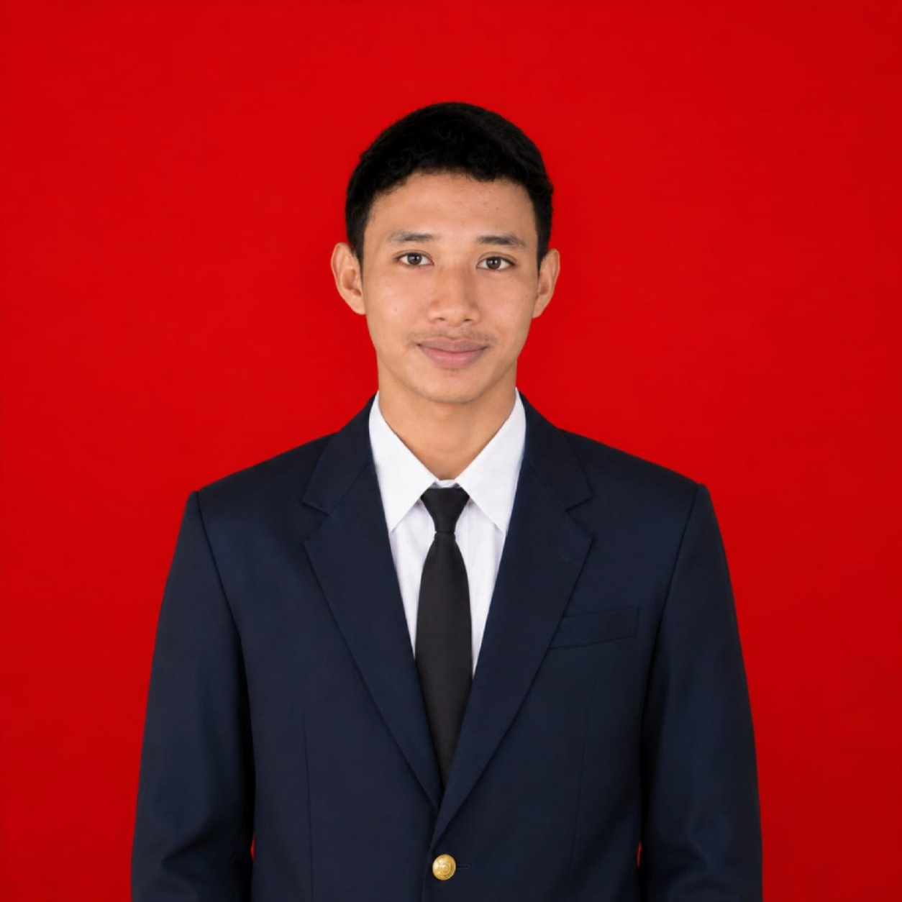

Seorang
Lulusan SMK TKR dengan pengalaman Mekanik & PKL di Bengkel Heri Motor Sidayu — terampil servis berkala, diagnosa scanner, kelistrikan, hingga pengelasan sasis.

Halo! Saya Moh. Zidan Zahir Abidin, lahir di Lamongan pada 3 Desember 2007. Saya adalah lulusan SMK jurusan Teknik Kendaraan Ringan (TKR) yang memiliki ketertarikan dan pengalaman nyata di bidang otomotif.
Saya merupakan pribadi yang teliti dan bertanggung jawab, memiliki komunikasi yang baik, serta mampu bekerja secara individu maupun dalam tim. Pengalaman PKL di Bengkel Heri Motor Sidayu memberikan saya kemampuan praktis yang solid di dunia perbengkelan.
Keahlian saya mencakup servis berkala, diagnosa menggunakan scanner, perbaikan kelistrikan, penanganan rem & suspensi, hingga pekerjaan body kendaraan seperti pengamplasan, gerinda, dan pengelasan sasis.
Terbuka untuk peluang kerja, magang, dan kolaborasi di bidang otomotif & perbengkelan.